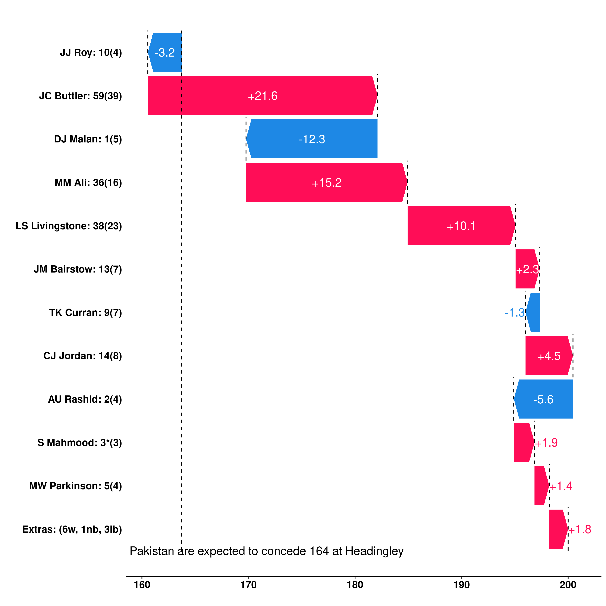
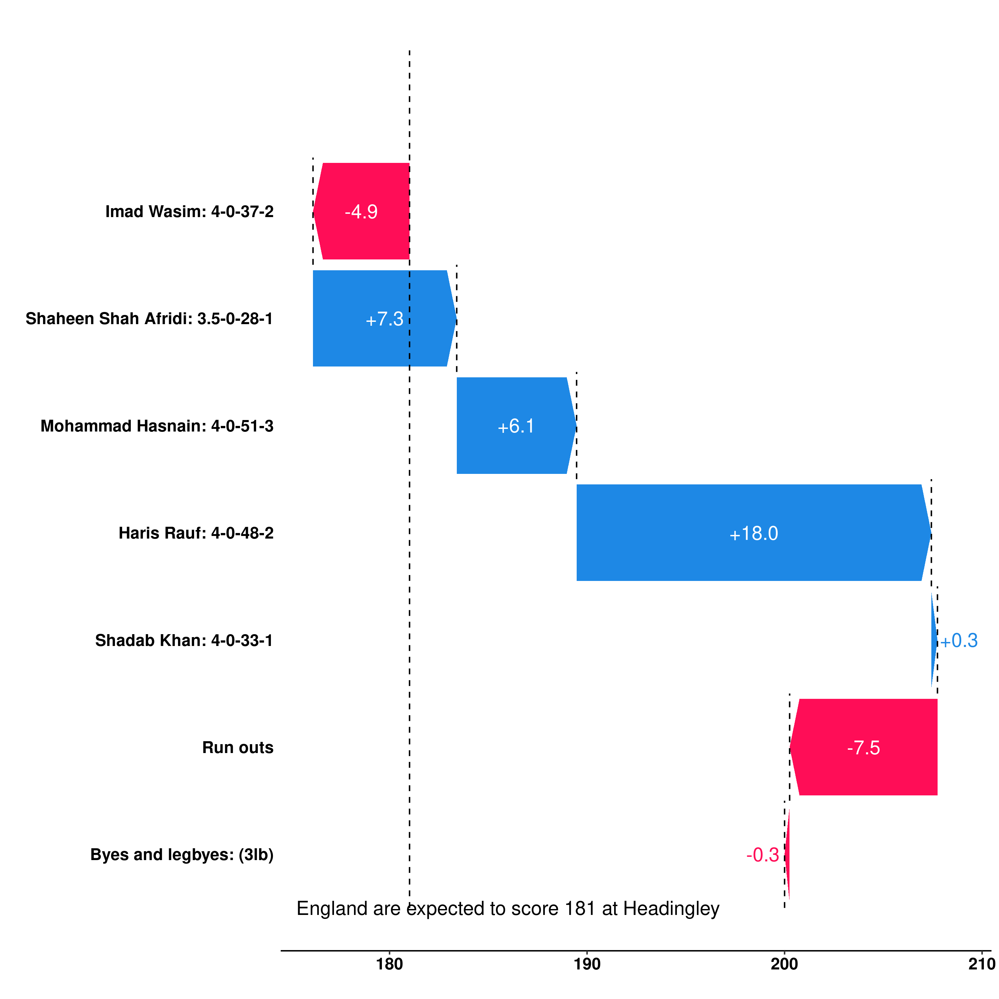

In cricket, the traditional metric to quantify how good a player is their batting average for their batting ability, and bowling average for their bowling ability. Whilst there are limitations of using this metric in test cricket (for example, if a batter has mostly played against weak bowling attacks or on flat pitches then they will have a higher batting average but not necessarily be better), the match situation does not really dictate the style that a player will play - the majority of the time they want to score as many runs as possible if they are a batter, or take as many wickets for as few runs as possible if they are a bowler. In limited overs cricket, the goal is not neccessarily the same. For example, if you enter the innings as a batter with 8 wickets left and 5 overs remaining, then a score of 5(3) will almost certainly be better for your team than scoring 10(10). This is because in the first scenario your team is likely to score more runs than in the second scenario despite you personally scoring less runs. The goal as a batter is to maximise the number of runs that your team scores, not the number of runs that you score. For bowlers, it is simply the inverse.
This problem has been realised, and therefore there is a lot of talk about strike rate these days (economy rate for bowlers). This is simply the runs per ball that you score/concede. However, this metric alone is not enough because strike rate is often compensated by a lower average (since you are being more aggressive and therefore not batting at your optimal way) and a high average is still valuable - the cost of losing a wicket varies upon the situation but in some it can be very costly. So the amount you are willing to compensate depends upon the game situation. Also different players have different strengths - some are able to bat at a high average but struggle to maintain a high strike rate (such as Virat Kohli), whereas others bat at a high strike rate but struggle to maintain a high average (such as Tim David).
Ideally we would like a metric that could look at the game situation, and tell you how a player has performed based upon that. Well I present to you contribution score. I define the contribution score as follows:
The contribution score for a batter is the difference in the number of runs that a team scores compared with the expected score if that batter was replaced with an average batter for his position in the competition, given the opposition bowlers and the ground conditions. For a bowler, this is again the difference in the number of runs that a team scores compared with the expected score but this time if the bowler was replaced with an average bowler for the competition, given the opposition batters and the ground conditions.
The neat thing about this is that if we take the contribution scores for all batters, sum them up and then subtract this value from the innings score then we have what the expected score is for an average team in this competition against this bowling attack at this venue. Lets do an example to make things clearer.
Take the first innings of England v Pakistan at Headingley in 2021, the scorecard can be found here. England scored 200 in this innings. Pakistan are a strong bowling team, and you would expect an average international team to score 164 against them at Headingley. England therefore scored 36 more runs than expected, and for each batter we can see how much they contributed to this total in the graph below:

Jos Buttler’s innings was the largest contribution, adding 21.6 runs more than the expected score, with Moeen Ali and Liam Livingstone also providing significant contributions. Dawid Malan’s contribution had the most negative impact - a combination of being out in the third over of the innings and only scoring 1 run from the 5 deliveries he faced.
What about the bowler’s contributions? Since England are a strong batting team, we would expect an average international team to concede 181 runs against them at Headingley. Pakistan therefore conceded 19 more runs less than expected, and for each bowler we can see how much they contributed in the graph below:

This graph tells us that the only bowler to perform better than an average bowler was Imad Wasim. Interestingly, Mohammad Hasnain performed better than Shaheen Shah Afridi despite an economy rate of 12.75 compared with an economy rate of 7.30 - this can mostly be credited to Hasnain claiming the wickets of Buttler and Moeen at important times of the innings. We can also see the contribution from Liam Livingstone being run out - it decreased the expected total by 7.5 runs.
The only metric that I have found similar to this is the Cricviz Match Impact metric. Whilst this does assign a plus or minus score to every ball in the match according to whether the expected total has increased or decreased, which is the same as my contribution score metric does, I’m unsure what their definition of expected is - I have clearly defined mine which is for an average team in the competition at the venue given the opposition, and therefore you have two different expected scores; one for an average batting team against the given bowling line up and another for an average bowling team against the given batting line up.
Before jumping to conclusions and saying that this metric has solved the problem of evaluating performance in Twenty20 cricket, it is important to first understand its limitations. The primary one being that since this is based upon the expected score, which comes from a statistical model using the data available at cricsheet.org, it has no true value. One model could give a different value for expected score to another, which would then give different contribution scores. This is unlike metrics such as batting average and strike rate, which are fixed and not subjective. Another thing worth noting is that the definition of contribution score doesn’t fit as well for the second innings since a team cannot score more than the target set.
Contribution scores can go a long way to helping us get a better understanding of how to win a match of Twenty20 cricket. In particular, this can be instrumental in squad selection. Suppose you have the first pick of a draft with every player in the world available. Who do you choose? Do you choose Jos Buttler, the world’s best opening batter; Suryakumar Yadav, the best middle order batter; Rashid Khan, the best spin bowler; or Jasprit Bumrah, the best pace bowler? Your answer should put a lot of weight lot upon how much better these are than their alternatives - contribution score allows you to put a single number upon these so you are able to come to a conclusion.